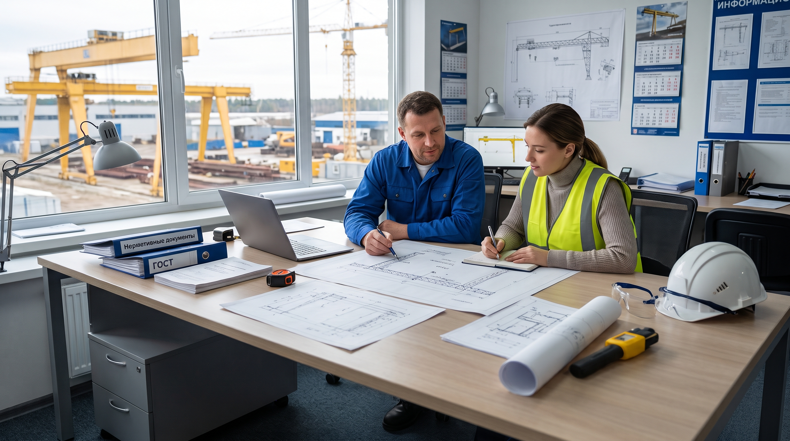

Собрали для вас нормативные документы, инструкции и шаблоны, которые помогают в работе с грузоподъемными кранами. Все материалы можно скачать и использовать в работе.

Постановление МЧС № 66 от 22.12.2018.
Постановление МЧС об изменении Правил.
Последние изменения Правил по кранам.
Разбор основных неисправностей и что делать.
Признаки износа и допуски Госпромнадзора.
Сравнение для склада и производства.
Регламент и что входит в обслуживание.
Когда нужна и что показывает.
Нормы и порядок замены.
Обязанности и ответственность.
Требования и порядок работ.
Сравнение затрат и рисков.
Замена масел и сезонное ТО.
Заполните форму — мы свяжемся с вами и поможем разобраться. Ответим в течение 1 рабочего дня.